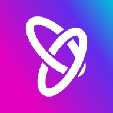

Software Development Engineer 1
Nbyula · EdTech, Bangalore
388Kpast decisions behind my admissions model
9 in 10university decisions auto-recorded, zero false positives
1serving layer for every AI agent, with failover
0humans in the prompt loop. My agent opens its own PRs
How I built it
- Admissions model that gives a student their real chance at a specific university: LightGBM over 388,000 past decisions, each university scored against its own admit history, validated on held-out intake cycles.
- Automated recording of university decisions that used to be read out of inboxes by hand: a classifier filters the mail, an extractor pulls the decision (rules first, model where they miss), and a resolver maps it to the right application.
- Consolidated the product’s AI agents onto one serving layer: pooled capacity with automatic failover to a metered API, a shared credential store, and a single async client.
- Self-improving prompt agent (GEPA) that mines real conversation traces, drafts rewrites, scores them on an eval set, and opens its own PR when one wins.